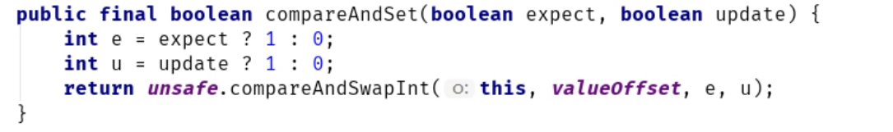

Unsafe类，来源于sun.misc包。该类封装了许多类似指针操作，可以直接进行内存管理、操纵对象、阻塞/唤醒线程等操作。Java本身不直接支持指针的操作，所以这也是该类命名为Unsafe的原因之一。
一、Unsafe简介
J.U.C中的许多CAS方法，内部其实都是Unsafe类在操作。
比如AtomicBoolean的compareAndSet方法：

unsafe.compareAndSwapInt方法是个native方法。（如果对象中的字段值与期望值相等，则将字段值修改为x，然后返回true；否则返回false)：
入参的含义如下：
| 参数名称 | 含义 |
|---|---|
| o | 需要修改的对象 |
| offset | 需要修改的字段到对象头的偏移量(通过偏移量，可以快速定位修改的是哪个字段) |
| expected | 期望值 |
| x | 要设置的值 |
Unsafe类中CAS方法都是native方法，需要通过CAS原子指令完成。在讲AQS时，里面有许多涉及CLH队列的操作，其实就是通过Unsafe类完成的指针操作。
二、Unsafe对象的创建
Unsafe是一个final类，不能被继承，也没有公共的构造器，只能通过工厂方法getUnsafe获得Unsafe的单例。
但是getUnsafe方法限制了调用该方法的类的类加载器必须为***Bootstrap ClassLoader***。
Java中的类加载器可以大致划分为以下三类：
| 类加载器名称 | 作用 |
|---|---|
| Bootstrap类加载器(Bootstrap ClassLoader) | 主要加载的是JVM自身需要的类，这个类加载使用C++语言实现的，是JVM自身的一部分，它负责将 【JDK的安装目录】/lib路径下的核心类库，如rt.jar |
| 扩展类加载器(Extension ClassLoader) | 该加载器负责加载【JDK的安装目录】jre、lib、ext目录中的类库，开发者可以直接使用该加载器 |
| 系统类加载器(Application ClassLoader) | 负责加载用户类路径（ClassPath）所指定的类，开发者可以直接使用该类加载器，也是默认的类加载器 |
所以在用户代码中直接调用getUnsafe方法，会抛出异常。因为用户自定义的类一般都是由系统类加载器加载的。
但是，是否就真的没有办法获取到Unsafe实例了呢？当然不是，要获取Unsafe对象的方法很多，这里给出一种通过反射的方法：
Field f = Unsafe.class.getDeclaredField("theUnsafe");
f.setAccessible(true);
Unsafe unsafe = (Unsafe) f.get(null);
但是，除非对Unsafe的实现非常清楚，否则应尽量避免直接使用Unsafe来进行操作。